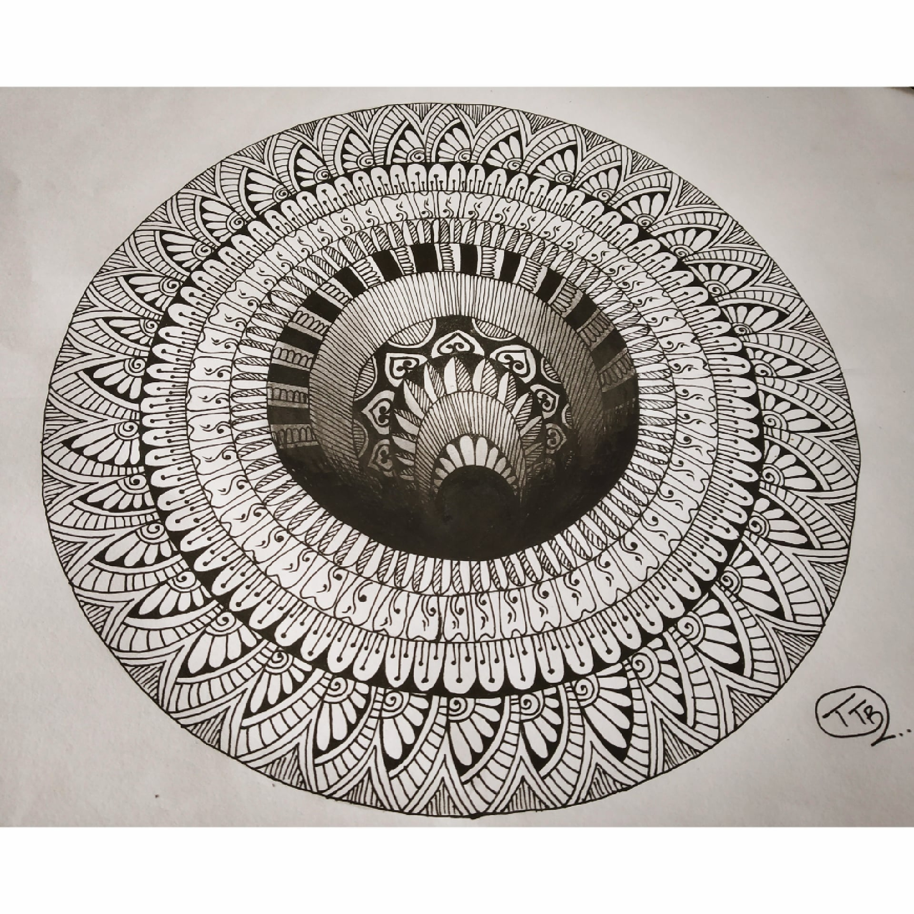

ILLUSIONAL MANDALA
In frame is one of the unique type of mandala art that is the illusional or 3D mandala art.
The illusional mandala art follows the same designing pattern as normal mandala designs witha little bit of change in dimesions and drawing structure.
The inner circles are to be drawn in such a way that
they all come and end on a single line and the outer circles are to be draw normal.
This is the main thing that would give a illusional effect to the drawing.
Materials Required :
A4 size plain paper.
Black ink pen.
Scale and Pencil
Compass.
steps one can follow(if needed) :
First take a plain paper and draw a circle using compass.
Then start drawing circles from the same line of the outer circle and draw 5 to 6 circles inside the circle.
After this is done, start shading the inner circle full dark gradually lighten ittill the second circle.
Start making designs in every layer with any black gel pen, whichever type opf design you want to.
After all this is done just lightly shade the borders of the already shaded part ,
so that the design looks overlapped with the shading and wpould then give a shadow effect.